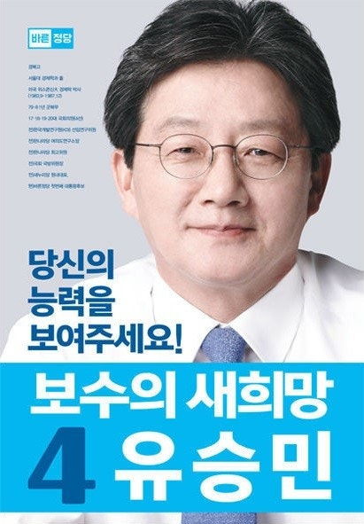

후보자 정보: 유승민 (제 19대 대통령 선거)

| 소속 정당 | 바른정당 |
|---|---|
| 생년월일 | 1958년 1월 7일 |
| 출신지 | 대구광역시 |
| 학력 | 위스콘신대학교 경제학 박사 |
| 주요 경력 |
제17·18·19·20대 국회의원(대구 동구을) 국회 국방위원회 위원 새누리당 원내대표 제19대 대통령 선거 바른정당 후보 |
주요 공약 및 정책
✔ 보수 개혁: 공정하고 따뜻한 보수, 정치·경제 개혁 추진
✔ 경제 정책: 대기업 중심 경제구조 개혁, 중소기업 및 청년 일자리 활성화
✔ 복지 정책: 저소득층 지원 강화, 사회안전망 확충
✔ 안보 및 외교: 한미동맹 강화, 북핵 대응을 위한 국제 공조 강화
✔ 경제 정책: 대기업 중심 경제구조 개혁, 중소기업 및 청년 일자리 활성화
✔ 복지 정책: 저소득층 지원 강화, 사회안전망 확충
✔ 안보 및 외교: 한미동맹 강화, 북핵 대응을 위한 국제 공조 강화
비전과 슬로건
슬로건: "당당한 대통령, 새로운 대한민국"
핵심 가치: 정의, 책임, 따뜻한 보수주의
핵심 가치: 정의, 책임, 따뜻한 보수주의
논란 및 이슈
✔ 보수 분열 논란: 새누리당 탈당 후 바른정당 창당으로 인한 보수 분열 지적
✔ 지지율 저조: 중도노선으로의 이동에도 불구하고 낮은 지지율 유지
✔ 공약 현실성 논란: 일부 정책의 실현 가능성 부족에 대한 지적
✔ 지지율 저조: 중도노선으로의 이동에도 불구하고 낮은 지지율 유지
✔ 공약 현실성 논란: 일부 정책의 실현 가능성 부족에 대한 지적